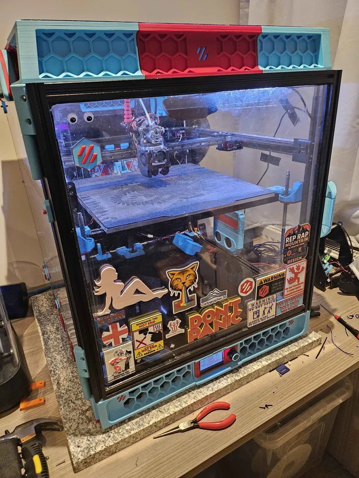

The complete, current Trident config lives in its own repository, VT350. This page is the build sheet: every upgrade with a link to the part.
Originally a formbot kit
- Nitehawk 36, small extension for USB Cartographer and piano wire installed in umbilical with zip ties
- RGB 3010 fan on Reaper toolhead
- BTT SFS filament runout sensor v2
- Bed fans 92mm x 25cm (2 off)
- CNC xy joints
- CNC A/B motor mounts
- Cartographer CNC mount for Cartographer (also works with Beacon)
- Cartographer ADXL v3 (red)
- HyperNova toolhead with UHF Rapido v2 Plus, PT1000, Bozzle 0.5mm nozzle and CNC Mini Sherpa by Fystec.
- BFIs (not really!!!); CNC ones that are advertised as BFIs but are actually Ramalamas in reality
- Top hat mod and 1.0.R carry handles
- Clicky clacky door kit UK or US
- Clicky clacky door build guide
- Octopus Pro v1.0.1
- PT1000 thermistors all over the place
- Disco on sticks
- West3d x and y titanium backers
- Nevermore micro v6 with correct coconut based carbon pellets inside and 2 x 5015 fans
- 350mm textured bed and magnetic base
- 6mm Gates GT2 belts
- GMKTec NucBox AMD with 256GB SSD
- mini12864 screen
- Sound effects based on samples of 2001 Space Odyssey in wav files for specific print macros as per here
- Cricut Voron logo on rear panel of printer
- Mellow 2504ac A/B motors
- 48V with a slimline 24V Meanwell power supply and another Meanwell slimline 48V power supply
- Cable clips for 2020 extrusions all over the place
- Limit switches (get set: Color: MS-1A-13.5 and buy a few sets like 20 as they will always come in handy)
- Heatset inserts - get loads
- Handy cheap temp gun for checking A/B stepper motor etc temps
- Mellow 1.5 Pro TMC5160 external Stepper Motor Drivers with fans x 2; On these mounts
- Spare melt zone extenders
- Voron metal serial number plate
- Marble slab under printer from B&Q UK; 600mm square, 3cm high
- Disco RGBW on sticks mount
- Logitech C920 camera with this mount (mine is mounted internally though)
- Bowden tube guide
- Annex Engineering panel clips
Klipper (Now Kalico) plugins...
- Shake n Tune
- Klipper Auto Speed
- Rainbow BARF - currently not installed
- LED Effect - for strip lighting
- TMC Autotune
- Klipper network status (only suitable for a mini12864 LCD Display)
- Stereo sound effects
- Sonar
- Z_TILT_NG calibrated Z_TILT for speedy Z_TILTing.
{kind=link}
